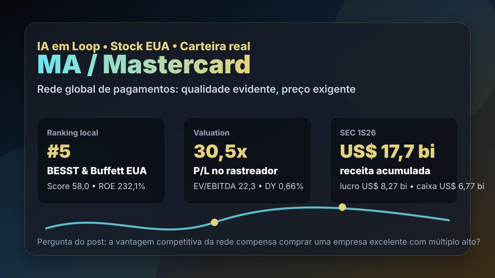

10/08: MA, Mastercard e o preço da rede perfeita
MA está na carteira real BESST & Buffett Dolarizada e aparece entre os melhores nomes do ranking de qualidade dos Estados Unidos. A pergunta central é direta: a rede global de pagamentos justifica pagar múltiplo alto ou o mercado já embutiu perfeição demais no preço?

Mastercard combina escala, marca, margem e efeito de rede; o ponto sensível é se o preço ainda deixa margem de segurança para uma empresa já muito reconhecida pelo mercado.
Resposta curta: negócio excelente, preço exigente
Mastercard é um dos casos mais claros de empresa leve em ativos físicos, com rede global, marca forte e alta rentabilidade. No arquivo local de rankings com data-base de 11/07/2026, MA aparece em 5º lugar no BESST & Buffett EUA, com score de 58,0, P/L de 30,48, EV/EBITDA de 22,27, ROE de 232,08% e dividend yield de 0,66%.
A carteira real dolarizada do IA em Loop registra MA como posição de pagamentos, com 20,0% do bloco inicial, US$ 19,49 executados, 0,03599867 ação e preço médio de US$ 541,4088. É uma posição pequena em valor absoluto, mas relevante como estudo de qualidade: a tese não é dividendo alto; é perenidade, escala e crescimento de pagamentos digitais.
O que os dados verificados mostram
A consulta pública à SEC no CIK 0001141391 mostra que a Mastercard arquivou 10-Q em 30/07/2026, referente ao trimestre encerrado em 30/06/2026. No 2T26, a empresa registrou US$ 9,277 bilhões de receita, US$ 5,587 bilhões de lucro operacional e US$ 4,388 bilhões de lucro líquido.
No acumulado do primeiro semestre de 2026, a SEC mostra US$ 17,675 bilhões de receita, US$ 10,494 bilhões de lucro operacional, US$ 8,270 bilhões de lucro líquido e US$ 6,772 bilhões de caixa operacional. O capex acumulado foi de apenas US$ 445 milhões, reforçando o perfil de negócio com alta conversão de resultado em caixa.
No balanço de 30/06/2026, a Mastercard tinha US$ 57,691 bilhões em ativos, US$ 11,291 bilhões em caixa e equivalentes e US$ 5,611 bilhões de patrimônio líquido. A diferença entre caixa gerado e patrimônio contábil ajuda a explicar ROE muito alto, mas também exige cuidado: múltiplos sobre patrimônio ficam menos úteis em modelos asset-light.
| Métrica verificada | Fonte/período | Valor | Leitura |
|---|---|---|---|
| Receita trimestral | SEC 10-Q 2T26 | US$ 9,277 bi | escala global de pagamentos |
| Lucro líquido trimestral | SEC 10-Q 2T26 | US$ 4,388 bi | margem líquida muito elevada |
| Caixa operacional | SEC 1S26 | US$ 6,772 bi | forte conversão de resultado em caixa |
| Capex | SEC 1S26 | US$ 445 mi | baixa intensidade de capital físico |
| Recompras | SEC 1S26 | US$ 8,933 bi | retorno ao acionista depende do preço pago |
Por que MA importa para a carteira real
Mastercard é uma tese de trilho financeiro global. Ela não precisa emprestar dinheiro como um banco tradicional para participar do crescimento de consumo, comércio eletrônico, viagens, pagamentos digitais e transações internacionais. O valor econômico está na rede, na aceitação por lojistas, na confiança da marca e na capacidade de cobrar por uma infraestrutura difícil de substituir.
A leitura de carteira é que MA melhora a qualidade média do bloco dolarizado, mas não resolve sozinha o problema de preço. Empresa excelente pode entregar retorno ruim se comprada sem margem. O preço consultado em 10/08/2026 ficou perto de US$ 564,92, dentro de uma faixa de 52 semanas entre US$ 464,52 e US$ 601,77. Ou seja: a tese segue forte, mas não parece desprezada pelo mercado.
MA é um ativo de qualidade para acompanhar de perto: efeito de rede, caixa forte, pouca necessidade de capex e presença real na carteira. O risco é pagar múltiplo de perfeição em uma empresa sensível a regulação, concorrência em pagamentos e desaceleração de consumo global.
O que favorece e o que ameaça a tese
Favoráveis
• Rede global com aceitação ampla e alto custo de substituição.
• Margem líquida elevada e lucro recorrente em escala.
• Caixa operacional de US$ 6,772 bilhões no primeiro semestre.
• Capex baixo para o tamanho do negócio.
• Exposição estrutural a pagamentos digitais, viagens e comércio eletrônico.
Desfavoráveis
• P/L perto de 30 exige crescimento consistente.
• Dividend yield baixo deixa o retorno dependente de valorização e recompras.
• Regulação de taxas de intercâmbio e competição podem pressionar margens.
• Desaceleração do consumo global afeta volumes transacionados.
• Recompras só criam valor se realizadas a preços racionais.
Checklist para acompanhar daqui em diante
| Ponto | O que monitorar | Se piorar |
|---|---|---|
| Volumes | crescimento de transações e pagamentos internacionais | o prêmio de crescimento fica vulnerável |
| Margem | lucro operacional sobre receita | competição ou regulação podem estar mordendo o fosso |
| Valuation | P/L, EV/EBITDA e distância do topo de 52 semanas | entrada sem margem aumenta risco assimétrico |
| Recompras | valor recomprado versus preço da ação | capital pode ser alocado com retorno baixo |
| Regulação | intercâmbio, taxas e regras de pagamentos | o poder de preço da rede pode diminuir |
Conclusão
A resposta para a pergunta do post é: a rede da Mastercard justifica prêmio de qualidade, mas não elimina a necessidade de margem de segurança. Os números mostram uma empresa de caixa forte, capex baixo, lucro elevado e efeito de rede. O risco está menos no negócio atual e mais no preço pago por ele.
Na régua do IA em Loop, MA é uma posição de qualidade para manter sob lupa na carteira real dolarizada. A compra fica mais defensável quando o preço oferece desconto maior ou quando os resultados provam aceleração suficiente para sustentar o múltiplo. Sem isso, o investidor pode estar pagando por uma rede quase perfeita — e perfeição costuma deixar pouco espaço para erro.